Programme
Pédagogie
Compétences attendues
- Collaborer à un diagnostic du système d’information ;
- Identifier les besoins d’évolution du système d’information ;
- Justifier les enjeux de la transition numérique d’une organisation ;
- Analyser un contrat de prestations de services informatiques.
- Analyser les différents formats d’échange de documents et apprécier leur interopérabilité
- Caractériser et apprécier une procédure d’échange de données informatisées
- Caractériser et exploiter les fichiers d’échange de données exigés par la législation
Savoirs associés
- Internalisation et externalisation du système d’information ;
- La transition numérique des organisations ;
- Le rôle des entreprises de services numériques ;
- Contrats de prestations de services.
- Interopérabilité des données et procédures d’échange dématérialisées
- Langage à balises d’échange de données de gestion (XML)
- Documents électroniques légaux (factures, bulletins de salaire…)
Plan
- Cours 1.4.1 La transition numérique des entreprises 1.4.2 Les entreprises de services numériques (ESN) 1.4.3 Les enjeux de l’internalisation ou de l’externalisation du SI 1.4.4 Les procédures d’échange de données dématérialisées 1.4.5 Les documents électroniques légaux
- Synthèse
Mots clés
Contrat de prestations de services, Diagnostic du SI, Entreprise de services numériques, Infogérance, Internalisation, Externalisation, Réseaux sociaux, Site Web, Spécialisation, Transition numérique
Trois objectifs principaux de la présence en ligne des entreprises sont la nécessité de faire connaitre l’activité, pouvoir être trouvé facilement et pouvoir communiquer avec les clients ou prospect. Les modalités de la visibilité en ligne, enjeu crucial pour la compétitivité, prend des formes multiples : site Web, présence sur les réseaux sociaux, référencement, etc. Comment la mise en place de la transition numérique contribue-t-elle à accroître la performance des organisations ? Comment profiter des compétences des entreprises de services numériques (ESN) ?
À quoi ça sert ?
Une organisation ne décide pas seulement de quels outils elle utilise, mais de qui les fait tourner, où sont ses données et comment ses documents circulent avec l’extérieur. Ce sont des décisions de gestion, pas des décisions techniques — et elles engagent des budgets, des contrats et des responsabilités juridiques.
En tant que futur professionnel du chiffre, vous serez consulté sur ces choix, et vous serez le premier concerné par la facture électronique et la déclaration sociale nominative, qui sont désormais obligatoires.
Cours
1.4.1 La transition numérique des entreprises
Chez Vasseur — la situation
Un concurrent tourangeau propose depuis six mois un chiffrage en ligne en trois minutes. Chez Vasseur, il faut compter huit jours entre l’appel du client et l’envoi du devis. Camille Vasseur ne perd pas des clients parce que ses fenêtres sont moins bonnes.
La question de cette section : en quoi consiste vraiment une transition numérique, et par où commence-t-elle ?
Définition
La transition numérique désigne le processus d’évolution d’une organisation lui permettant de profiter pleinement du potentiel offert par les technologies numériques.
Le périmètre de la transition
- La transition numérique des organisations prend des formes plurielles afin de générer des performances :
| Item | Description |
|---|---|
| Collecte des données sur le Web, les réseaux sociaux (avis, notations, commentaires) | - Utilisation au sein de logiciels de la relation clientèle - Adaptation, réajustement des biens et services - Gestion “Social Media Newsroom” (gestion réseaux sociaux) |
| Visibilité sur le Web / référencement | - Construction d’une e-réputation, d’une identité sur le Web - Développement de la présence sur le Web par des personnels spécifiques (Community Manager) - Interaction avec les visiteurs (formulaire de contact, e-mailing) - Attente de retombées commerciales de Facebook, Instagram… - Référencement dans les moteurs de recherche |
| Budget de la transition numérique | - Financement de la création du site Web - Financement de la mobilité (accès en nomade au réseau) - Développement du télétravail (matériel à domicile, connexion) |
| Développement du numérique | - Évolution des usages du numérique en entreprise - Sensibilisation aux risques du numérique - Exploitation des plateformes d’e-commerce - Appropriation des mesures sécuritaires du SI - Maîtrise de la dématérialisation des factures, commandes… - Organisation du télétravail (évolution des attentes des salariés, période Covid, acquisition d’équipements pour le travail à domicile, etc.) |
Focus — France Num
L’initiative France Num, lancée par la direction générale des entreprises du ministère de l’Économie et des Finances en janvier 2019, a pour objectif de rassembler les actions menées par l’État, les régions et leurs partenaires pour accompagner les TPE/PME vers le numérique. Plus de 1 300 « activateurs », répartis sur tout le territoire, sont mobilisés. France Num déploie aussi des prêts garantis par le secteur bancaire classique.
Le processus de transition
A savoir
L’e-commerce (produits et services) représente 112 Mds €, soit 13,4 % du commerce de détail (Fevad, 2020).
- La transition numérique s’organise en quatre étapes principales :
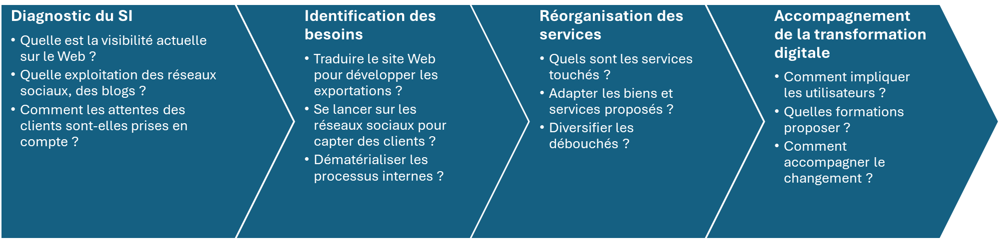
Mise en pratique
Cas pratique 1 : Snowtik
Compétences attendues
- Collaborer à un diagnostic du système d’information
- Identifier les besoins d’évolution du système d’information
- Justifier les enjeux de la transition numérique d’une organisation
Domiciliée à Lyon, l’entreprise Snowtik fabrique des équipements matériels pour la pratique de sports d’hiver. Aux skis traditionnels, s’est ajoutée il y a 5 ans la fabrication de snowboards et chaussures. Snowtik vend aux particuliers et aux professionnels. Le système d’information est géré partiellement en interne et par le biais de deux ESN qui œuvrent sur des missions complémentaires. Le parc informatique est composé de 44 postes fixes situés dans les bureaux administratifs et les ateliers de production. La location de matériel en station va bientôt grossir le portefeuille d’activités (possibilité de réservation en ligne). Un diagnostic du SI actuel est présenté dans le document.
- Repérez les objectifs du diagnostic effectué sur le SI de Snowtik.
- Expliquez pourquoi la collaboration des utilisateurs est nécessaire pour mener à bien ce diagnostic.
- Indiquez et justifiez les évolutions du SI à déclencher au regard des conclusions du diagnostic et de la nouvelle activité.
- Identifiez les missions pour lesquelles le télétravail peut être préconisé et précisez pourquoi et comment le SI est apte à y répondre.
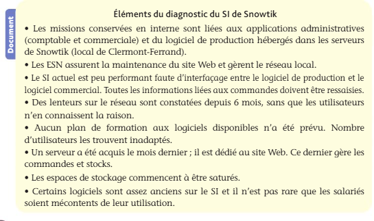
Cas pratique 2 : Boulangerie Marbot
Compétences attendues
- Justifier les enjeux de la transition numérique d’une organisation
- Identifier les besoins d’évolution du système d’information
La boulangerie-pâtisserie Marbot, à Angoulême, emploie 11 salariés et réalise 640 000 € de chiffre d’affaires. Tout se fait aujourd’hui sur papier : les commandes des clients professionnels (deux collèges, une maison de retraite, trois restaurants) sont prises par téléphone et notées sur un cahier ; les factures sont établies chaque fin de mois sur un tableur, imprimées et postées ; les stocks de matières premières sont contrôlés à vue. La gérante, Claire Marbot, constate trois choses : les erreurs de commande se multiplient, deux clients professionnels règlent avec deux mois de retard sans qu’elle s’en aperçoive, et une boulangerie concurrente vient d’ouvrir un service de commande en ligne avec retrait en magasin. Elle dispose d’un budget de 8 000 € et n’a aucun salarié compétent en informatique. Missions
- Définissez la transition numérique et montrez qu’il ne s’agit pas seulement d’acheter du matériel.
- Identifiez, pour chacun des trois constats de la gérante, le besoin d’évolution du SI correspondant.
- Ordonnez les quatre étapes de la démarche de transition numérique et proposez, pour chacune, une action concrète adaptée à la boulangerie Marbot.
- La gérante n’a aucune compétence informatique en interne. Indiquez vers qui elle peut se tourner et citez un dispositif public d’accompagnement des TPE.
1.4.2 Les entreprises de services numériques (ESN)
Chez Vasseur — la situation
Thomas Lemoine est à mi-temps et part à la retraite dans deux ans. Camille Vasseur hésite : embaucher un informaticien à plein temps, ou confier davantage à l’ESN Cher Informatique, qui gère déjà les sauvegardes ?
La question de cette section : que sait faire une ESN, et que doit contenir le contrat qui la lie à l’entreprise ?
Définition
Une entreprise de services numériques (ESN) désigne une société spécialisée dans le domaine des prestations en technologies informatiques.
- Les ESN visent à améliorer le fonctionnement des SI de leurs clients via leurs savoir-faire dans le digital ;
- Elles répondent à un besoin d’externalisation des compétences numériques ;
- Ces ESN permettent aux entreprises de disposer de compétences informatiques et de se recentrer sur leur cœur de métier.
Exemple
Capgemini et IBM sont deux ESN qui occupent une place importante dans le paysage mondial.
Le rôle des ESN
- Parfois spécialisées (webdesigner, gestionnaire des réseaux sociaux, développement d’applications, etc.), les ESN assurent des missions variées à géométrie variable dans tous les secteurs.
Exemple
Les ESN interviennent dans l’aéronautique, l’industrie automobile, les télécommunications ou encore les services publics…).
- Le périmètre et contenu des prestations
Définition
L’infogérance consiste en la prise en charge de tout ou partie du SI par une ESN.
- Les activités d’infogérance peuvent couvrir des missions ponctuelles (conseil technique sur l’achat d’un serveur) ou assurer le développement complet d’un SI :
| Item | Description |
|---|---|
| Conseil, mise en place de solutions digitales | - Diagnostic du SI, audit du parc informatique, tableaux de bord du numérique - Rédaction d’un cahier des charges (projet SI à réaliser) - Évaluation des besoins d’évolution du SI (fusion d’entreprises, croissance du SI) - Transformation digitale, valorisation de l’e-réputation - Choix technologiques (caractéristiques, poste client léger, nomadisme, télétravail) - Gestion électronique de documents - Mise en place du télétravail |
| Cybersécurité, hébergement des données | - Lieux d’hébergement, de stockage, d’archivage des données (data) - Sauvegardes externalisées dans l’informatique en nuage (cloud) - Tests de résistance du SI aux cyber-attaques, aux intrusions - Administration d’un réseau, gestion des droits d’accès - Processus de cybersécurité intégrée (protéger, surveiller, traquer, renforcer) |
| Intégration, transition numérique | - Création d’un site Web, audience et analyses du trafic d’un site Web - SEO (Search Engine Optimization) du site Web (référencement) - Analyse des données sur les réseaux sociaux et décisions-réponses clients - Clients connectés, échanges de données et analyses en temps réel - VoIP (voix IP) : leviers de réduction des coûts, mobilité |
| Formation | - Progiciel de gestion intégré (PGI) - Logiciel CRM (relation client) - Logiciel GCL (logistique) - Logiciel de gestion des points de vente, d’e-commerce - E-learning - Community manager - Comportement et compétences en sécurité informatique |
| Conception, développement, support technique | - Prise en charge de tout ou partie du SI (infrastructure matérielle et applicative) - Support technique (câblage informatique, assistance technique) et hotline - Maintenance matérielle et logicielle (préventive, corrective, évolutive) - Développement et maintenance des applications métier - Solutions SaaS (logiciels en ligne facturés à l’utilisation) |
- Les besoins des entreprises clientes
- Les ESN apportent une expertise qui fait souvent défaut en interne ;
- Elles compensent l’absence de compétences informatiques dans l’entreprise cliente :
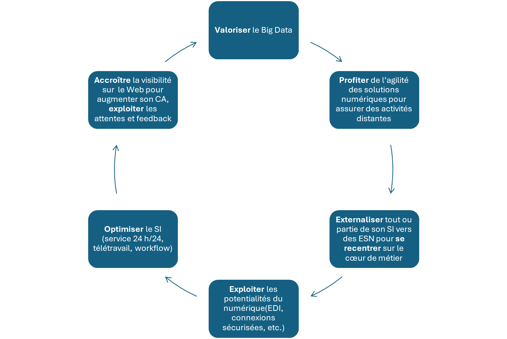
A savoir
Le big data désigne des jeux de données extrêmement volumineux et complexes qui ne peuvent pas être facilement gérés ou analysés avec des outils de traitement de données traditionnels, en particulier des feuilles de calcul.
Le big data comprend des données structurées, telles qu’une base de données d’inventaire ou une liste de transactions financières, des données non structurées, telles que des publications ou des vidéos sur les réseaux sociaux, et des jeux de données mixtes, tels que ceux utilisés pour entraîner de grands modèles de langage pour l’IA.
Ces jeux de données peuvent inclure n’importe quoi, des travaux de Shakespeare aux dix derniers budgets annuels d’une entreprise.
Les contrats de prestations de services
Définition
Un contrat de prestation de services est une convention au terme de laquelle une société s’oblige, contre rémunération, à exécuter pour une autre société une mission déterminée.
- Les modalités de facturation du contrat de services
- La facturation des missions répond à différents modèles de fixation du prix :
- Le forfait est un montant fixe, issu d’un engagement mutuel entre le client et l’ESN. Les contenus sont alimentés par un cahier des charges. Le prix est souvent plus élevé mais permet de s’affranchir d’incertitudes. L’ESN s’engage à une obligation de résultat ;
- La régie est une facturation au réel. Cette facturation est adaptée aux missions spécifiques reposant sur des compétences spécialisées ou innovantes. Le montant peut être néanmoins fixé dans une fourchette de prix. L’ESN exécute alors souvent les misions selon une obligation de moyens ;
- Une formule hybride permet, selon la nature des missions, de profiter des avantages et inconvénients des deux alternatives.
- Les clauses et contenus
- Le contrat de services répond au cahier des charges qui lui est adjoint ;
- Un cahier des charges rassemble, entre autres, les caractéristiques techniques, les délais et les modalités des missions ;
- Il prévoit également des clauses permettant de faire face aux manquements du prestataire (non-respect des délais d’intervention à la suite d’une panne, non-respect de la confidentialité des données, etc.).
Exemple
Parmi les clauses les plus courantes figurent les missions, les délais, les pénalités en cas retard ou d’inexécution du contrat et le prix à régler.
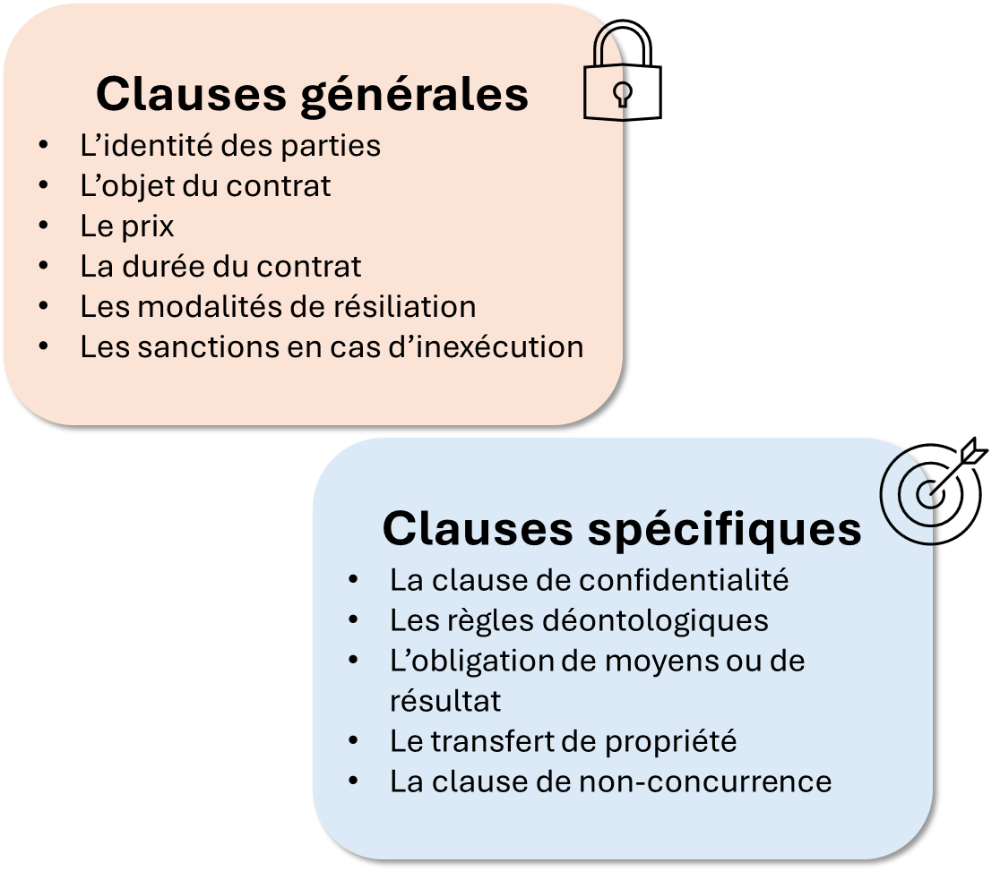
Mise en pratique
Cas pratique 3 : Hôtel des Volcans
Installé à Clermont-Ferrand depuis 15 ans, l’Hôtel des Volcans dispose de 55 chambres. Il propose également des services de restauration, de garde d’enfants ou encore de location de vélos, lesquelles génèrent une croissance régulière de l’activité. L’hôtel emploie 106 salariés : 99 en hôtellerie-restauration et 5 à des postes administratifs. Trois ESN de la région prennent en charge les missions du SI, lequel est jugé performant.
- Quelles sont les principales missions incombant aux ESN de l’Hôtel des Volcans ?
- Quels avantages l’Hôtel des volcans peut-il tirer du recours aux ESN ?
1.4.3 Les enjeux de l’internalisation ou de l’externalisation du SI
Chez Vasseur — la situation
Quatre logiciels qui ne se parlent pas, une dizaine de tableurs officieux, un site Internet à part, et personne qui ait la vue d’ensemble. Avant de décider quoi que ce soit, Camille Vasseur a besoin de savoir où elle en est.
La question de cette section : comment fait-on l’état des lieux d’un SI, comment l’organise-t-on pour qu’il puisse évoluer, et que garde-t-on en interne ?
- Les organisations ont trois possibilités :
- Mettre en œuvre leur SI en interne ;
- Confier la gestion du SI à une ESN (prestation de service) ;
- Adopter un système mixte en ne déléguant que certaines tâches.
La prise de décision
Définition
- L’internalisation est la prise en charge d’une tâche ou d’une mission par l’organisation ;
- L’externalisation consiste à confier une tâche ou une mission à un prestataire extérieur spécialisé. Dans le cas du SI, on parle d’infogérance.
- La décision d’internalisation ou d’externalisation relève, pour partie, d’une stratégie d’entreprise.
| Pourquoi choisir d’internaliser ? | Pourquoi confier une tâche à une ESN ? |
|---|---|
| - Compétences déjà présentes en interne - Volonté de garder la maîtrise du SI - Culture de l’indépendance - Interlocuteurs SI connus, proximité avec les utilisateurs | - Manque de compétences en interne - Nouvelle mission spécialisée (site Web) - Coût moindre - Flexibilité des besoins |
Attention
N’évacuez pas trop vite la possibilité de mixer gestion interne et prestations de services à géométrie variable.
Le diagnostic du SI
- Les systèmes d’information s’insèrent dans une démarche d’amélioration continue de la qualité de l’existant.
- Le diagnostic couvre les domaines suivants
- Etat des lieux du SI : matériels, logiciels, organisationnel, humain ;
- Anticipation d’évolutions à venir : croissance de l’organisation, Web ;
- Dysfonctionnements, exposition aux risques, cyber-attaques ;
- Etat des compétences internes et évolution des besoins ;
- Qualité, fiabilité des données ;
- Accès au réseau, connectivité, nomadisme ;
- Mesure des dysfonctionnements au travers d’indicateurs ;
- Travail collaboratif (ou groupware) opérationnel ;
- Aptitude de l’organisation à mettre en place un télétravail performant ;
- Maturité technologique de l’organisation.
- La collaboration à un diagnostic des besoins
- Le diagnostic de l’existant peut être découpé en une série d’actions :
- Enquêtes sur les pratiques, sur la satisfaction des utilisateurs ;
- Consultation des inventaires matériels et applicatifs ;
- Mesures des temps d’accès au réseau, des espaces de stockage des données, etc. ;
- Evaluation de la concordance des potentiels actuels du SI avec les besoins réels ;
- Mise en place performante du télétravail.
- Ces missions ne peuvent être réalisées sans implication des ressources humaines de l’organisation (recueil des pratiques et données, collecte des témoignages et constats de l’existant) ;
- Chaque utilisateur du SI doit être associé à la phase de diagnostic interne.
- Les conclusions du diagnostic
- La finalité d’un diagnostic est de déclencher des actions en matière de :
- Maintenance et d’acquisition de matériels et logiciels ;
- Répartition des responsabilités des acteurs ;
- Déclenchement des formations, recrutement ;
- Amélioration de la sécurité du SI ;
- Anticipation des cyber-attaques, le cyber-rançonnage.
A savoir
Le diagnostic peut être réalisé en interne ou par une ESN. Assurez-vous de l’objectivité de l’évaluation du SI que seule une ESN garantit.
L’urbanisation du SI
Définition
L’urbanisation du système d’information consiste à organiser le SI comme on organise une ville : en définissant des zones cohérentes, des règles de construction et des voies de circulation entre elles, afin que le SI puisse évoluer par morceaux sans qu’il faille tout reconstruire.
Une image pour comprendre
Une ville qui grandit sans plan d’urbanisme finit avec des maisons partout, des rues qui ne mènent nulle part et des canalisations impossibles à réparer. Un SI qui grandit sans urbanisation, c’est pareil : quinze logiciels achetés au fil des ans, qui ne se parlent pas, avec les mêmes clients saisis trois fois. L’urbaniste du SI ne construit pas les bâtiments : il décide où ils ont le droit d’être, et par quelles routes ils communiquent.
- L’urbanisation décrit le SI en quatre couches, du besoin vers la technique :
| Couche | Question à laquelle elle répond | Exemple |
|---|---|---|
| Métier | Que fait l’organisation ? | Vendre, produire, recruter, tenir la comptabilité |
| Fonctionnelle | De quelles fonctions a-t-elle besoin ? | Gérer les commandes, calculer la paie, éditer les factures |
| Applicative | Quels logiciels rendent ces fonctions ? | Le progiciel commercial, le logiciel de paie, le PGI |
| Technique | Sur quoi ces logiciels tournent-ils ? | Serveurs, réseau, système d’exploitation, hébergeur |
- Ce que l’urbanisation apporte concrètement :
- Elle évite les doublons applicatifs (deux logiciels qui font la même chose) et les ressaisies ;
- Elle rend le SI évolutif : on remplace un logiciel sans casser les autres, parce que les échanges passent par des interfaces définies ;
- Elle aligne les choix informatiques sur les besoins métier, et non l’inverse ;
- Elle fournit une cartographie du SI, indispensable au diagnostic comme à l’audit.
L’audit du SI
Définition
L’audit du système d’information est un examen méthodique et indépendant du SI, conduit au regard d’un référentiel de bonnes pratiques, destiné à porter une opinion sur sa fiabilité, sa sécurité et sa conformité, et à formuler des recommandations.
Diagnostic ou audit ?
Ne confondez pas les deux, la distinction est souvent demandée.
Le diagnostic est un état des lieux interne, orienté vers l’amélioration : « où en sommes-nous, que faut-il faire évoluer ? ».
L’audit est un contrôle mené selon un référentiel externe, par une personne indépendante, et qui engage une opinion : « le SI est-il conforme, fiable, maîtrisé ? ».
- Les principaux objets d’un audit du SI :
- la sécurité : droits d’accès, sauvegardes, protection contre les intrusions ;
- la fiabilité des traitements : les calculs produisent-ils un résultat exact et reproductible ?
- la piste d’audit : peut-on remonter d’une écriture comptable jusqu’à la pièce justificative d’origine, sans rupture ?
- la conformité réglementaire : RGPD, obligations de facturation, conservation des données ;
- la continuité : que se passe-t-il en cas de panne, et en combien de temps repart-on ?
- Les auditeurs s’appuient sur des référentiels reconnus, dont le plus connu est Cobit (Control Objectives for Information and related Technologies), qui décrit les objectifs de contrôle attendus d’un SI.
Pourquoi cela vous concerne directement
L’audit du SI n’est pas une affaire d’informaticiens. Le commissaire aux comptes qui certifie les comptes d’une entreprise doit s’assurer que le système qui produit ces comptes est fiable : si la piste d’audit est rompue ou si n’importe qui peut modifier une écriture validée, les comptes ne sont pas certifiables. C’est un point d’entrée classique des sujets d’examen.
Vérifiez que vous avez compris
Une entreprise fait auditer son SI et, la même année, lance un chantier d’urbanisation. Fait-elle deux fois la même chose ?
Non. L’audit constate et porte une opinion, au regard d’un référentiel et par une personne indépendante : « le SI est-il fiable, sécurisé, conforme ? ». L’urbanisation construit : elle réorganise le SI en zones et en règles de circulation pour qu’il puisse évoluer. Le premier dit ce qui ne va pas, la seconde décide de la cible. Elles s’enchaînent, elles ne se remplacent pas.
Mise en pratique
Cas pratique 4 : Çalur
Compétence attendue
Analyser un contrat de prestations de services informatiques
Située à Maubeuge, la SARL Çalur propose des biens et services liés à la pratique de véhicules tout-terrain. Un local abrite à la fois les bureaux administratifs, une boutique ouverte au public où sont vendus les articles spécialisés et les ateliers où sont effectuées les installations (treuils, pare buffles, protections, etc.). L’entreprise emploie 44 salariés. Le personnel est essentiellement composé d’ouvriers spécialisés et de techniciens réalisant les travaux d’installation sur les véhicules tout-terrain, de vendeurs et de personnels administratifs. Les logiciels métiers, en cohérence avec les activités comptables et commerciales, sont maîtrisés par leurs utilisateurs. La gérante de l’entreprise Çalur, Inès Hautmont, confie de nombreuses missions inhérentes à la fonction système d’information à des ESN de la région. Son parc informatique est composé de 28 postes, dont 5 exclusivement dédiés à des activités de diagnostic et de contrôle des installations des tout-terrain au moyen d’outils logiciels spécifiques. Les serveurs applicatifs et de données sont hébergés chez un prestataire informatique qui en assure la gestion, l’ESN MaubeugeTik. Les mises à jour logicielles, les maintenances des ordinateurs et des imprimantes sont également gérées par des ESN.
Document
Extrait des clauses du contrat de service de l’ESN MaubeugeTik
- Désignations, coordonnées de l’ESN MaubeugeTik et la SARL Çalur.
- Objet du contrat de service : relatif à la gestion des serveurs applicatifs et de données hébergées chez le prestataire.
- Assistance téléphonique 7j/7 24h/24, hotline.
- Rendez-vous programmés chaque premier lundi du mois afin de faire le point sur les dysfonctionnements constatés, sur l’état des serveurs, les évolutions en capacités à envisager et les besoins en maintenance applicative.
- Mise à disposition d’un interlocuteur de l’ESN MaubeugeTik, dédié aux besoins de Çalur.
- Appel ou enregistrement sur un espace numérique dédié par un membre quelconque de Çalur pour déclarer un dysfonctionnement nécessitant une intervention de l’ESN.
- Délai d’intervention en cas de dysfonctionnement fixé à 15 minutes.
- Méthode de facturation du présent contrat : au forfait de 2 500 € TTC mensuels payables le premier jour ouvré de chaque mois par virement bancaire, facture fournie huit jours avant l’arrivée de l’échéance.
- Pour toute demande exceptionnelle non couverte par le contrat, tarif en réel de 125 € par heure exécutée par l’ESN MaubeugeTik.
- Un accès Web sécurisé permettra de consulter l’état du contrat, la liste des interventions effectuées, le temps exceptionnel d’intervention réalisé.
- Confidentialité : le prestataire s’engage à garder strictement confidentiel toute information et documents auxquels il a accès dans le cadre de ses missions envers Çalur.
- Signatures électroniques des deux parties, date, lieu.
- Repérez les éléments manquants au regard du contrat de prestation de services présenté dans le document.
- Identifiez les avantages et inconvénients des modalités de facturation du contrat de prestations de services présenté dans le document.
- Justifiez le choix d’externalisation des missions liées au SI.
Cas pratique 5 : Névada
Compétences attendues
- Collaborer à un diagnostic du système d’information
- Identifier les besoins d’évolution du système d’information
- Justifier les enjeux de la transition numérique d’une organisation
- Analyser un contrat de prestations de services informatiques
L’entreprise Névada, domiciliée à Rouen, fabrique des arcs pour une pratique sportive en club. L’activité est gérée par 10 salariés, passionnés par leur métier mais peu tournés vers le développement commercial. Le dirigeant, Mathis Tavegus, qui pratique ce sport depuis 15 ans, s’inquiète de la baisse de CA au cours des 4 dernières années. Il a conscience que son SI n’est guère porteur de réussite. Les clients sont globalement fidèles, mais certains se tournent vers des fournisseurs plus réactifs. En effet, seuls les contacts téléphoniques ou les déplacements sur le lieu de Névada, permettent aux clients de passer commande. Le père de Mathis Tavegus, technico-commercial, gère le réseau. Il s’occupe également des devis. Un cabinet d’expertise comptable, la SAGF, assure les missions comptables et financières. L’ESN Bertflau intervient sur le SI. Lors de sa dernière visite, l’ESN Bertflau a préconisé d’engager le déclenchement d’une transition numérique. Le dirigeant, sensible à ces arguments, organise une rencontre avec Bertflau lors de laquelle ses salariés sont invités à exposer les idées et attentes en lien avec le SI. En vous appuyant sur vos connaissances et sur le dossier documentaire, répondez aux questions ci-après.
Missions
- Déterminez en quoi la venue des salariés à la réunion avec l’ESN Bertflau est source de réussite du projet d’évolution du SI.
- Expliquez pourquoi, avant tout déclenchement de projet, un diagnostic est réalisé.
- Identifiez les enjeux de la transition numérique pour Névada.
- Repérez les manquements dans le projet initial du contrat de services de Bertflau.
- Précisez les raisons pour lesquelles l’entreprise Névada a choisi de faire appel à des prestataires extérieurs pour la gestion du SI et du site Web.
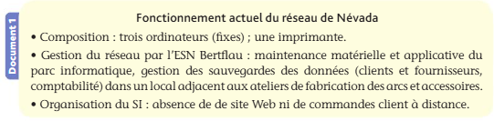
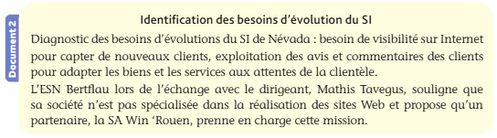
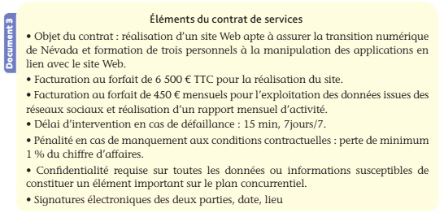
Cas pratique 6 : Groupe Vidal
Compétences attendues
- Collaborer à un diagnostic du système d’information
- Identifier les besoins d’évolution du système d’information
Le groupe Vidal, spécialisé dans la distribution de matériel médical, s’est constitué par rachats successifs : cinq sociétés absorbées en huit ans, chacune avec ses logiciels. Le groupe utilise aujourd’hui trois progiciels de gestion commerciale différents, deux logiciels de paie, quatre outils de gestion des stocks et un tableur maison pour consolider le tout. Un même client peut exister sous trois références différentes selon la société qui l’a facturé. La clôture des comptes consolidés demande six semaines. Le directeur administratif et financier réclame « un audit », le directeur des systèmes d’information parle, lui, « d’urbanisation ». Missions
- Distinguez précisément ce que recouvre la demande du directeur administratif et financier et celle du directeur des systèmes d’information. Les deux démarches sont-elles concurrentes ou complémentaires ?
- Décrivez le SI du groupe Vidal selon les quatre couches de l’urbanisation, à partir des éléments du contexte.
- Identifiez trois conséquences concrètes, pour la fonction comptable et financière, de l’absence d’urbanisation du SI du groupe.
- Le commissaire aux comptes du groupe s’inquiète de la piste d’audit. Expliquez ce qu’est la piste d’audit et pourquoi la situation décrite la met en danger.
- Proposez deux orientations d’urbanisation permettant de traiter le problème des références clients multiples.
1.4.4 Les procédures d’échange de données dématérialisées
Chez Vasseur — la situation
Un promoteur envoie ses commandes dans un format que le logiciel de Vasseur ne sait pas lire. Élodie les recopie donc à la main, une par une. Le mois dernier, une quantité mal recopiée a coûté onze fenêtres fabriquées pour rien.
La question de cette section : comment des entreprises différentes, avec des logiciels différents, échangent-elles des données sans ressaisie ?
Les formats d’échange
- Une organisation doit pouvoir échanger des données avec les acteurs internes et externes de l’entreprise ;
- La compatibilité des données repose sur la notion de format.
Définition
Le format d’un fichier désigne le procédé utilisé pour coder les données, les rendant ainsi compréhensibles par un logiciel.
- Le format provient de la façon dont une application enregistre le fichier créé ;
- Certains formats sont dits « ouverts », dans la mesure où les fichiers crées peuvent être utilisés et modifiés par de nombreuses applications. D’autres sont issus de formats propriétaires qui nécessitent de recourir à des logiciels spécifiques souvent payants.
Exemple
Les formats d’échange de données sont conçus pour supporter un ou plusieurs types de contenus tels qu’un texte, une image ou encore une vidéo.
- Les extensions de formats
- À chaque format de fichier correspond une extension prenant la forme d’un suffixe.
Exemple
ImageUE8.jpegest un fichier au format Joint Photographic Experts Group. ArchiveUE8.zip est un fichier d’archive ZIP, format de compression des données.
- Les principaux formats d’échange de documents contenant du texte
- Les extensions sont explicites (ex. : «
.txt» pour texte).
| Types de formats | Caractéristiques | Extensions |
|---|---|---|
| Document.docx | - Format provenant du logiciel Microsoft Word - Conservation de la mise en forme. | .docx |
| Document.txt | - Format ne conservant que le contenu du texte du document - Ouverture par tout type de logiciel | .txt |
| Document.pdf | - Format de l’éditeur - Conservation du contenu et de la mise en forme | .pdf |
| Document.odt | - Format issu des applications Open Document (Open Office) - Conservation des principales caractéristiques à l’ouverture de Word | .odt |
- Le choix d’un format
- Le choix d’un format d’enregistrement dépend du contexte d’utilisation.
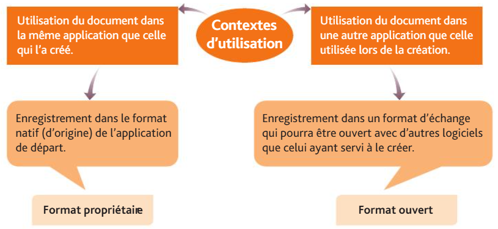
- Le format est choisi lors de l’enregistrement du fichier ;
- Si les formats ne sont pas compatibles, l’ouverture ou la modification est impossible.
L’interopérabilité des données
Définition
L’interopérabilité est l’aptitude d’un SI à fonctionner au sein même d’un système ou avec d’autres systèmes sans contrainte technique.
- La circulation et l’interaction des données sont possibles entre systèmes interopérables.
Exemple
Un logiciel de gestion de relations clients (GRC ou customer relationship management – CRM) doit pouvoir interagir avec :
- un logiciel de génération automatique des factures ;
- Un logiciel de paiement en ligne ;
- Un système de gestion de base de données relationnelle (SGBDR) ;
- Un logiciel de gestion des stocks ;
- Une application automatisée d’e-mailing. Il est fréquent que coexistent au sein d’un SI des applications installées au fur et à mesure, voire conçues en interne, sans interopérabilité. La mise en place d’interfaces (liens entre applications) peut parfois combler ces lacunes techniques. L’interopérabilité permet aux données de circuler entre les logiciels de production, de gestion des stocks ou des ventes… sans qu’une ressaisie soit nécessaire. Les données sont donc à la fois plus sûres et transmises plus rapidement puisque beaucoup d’erreurs proviennent de la saisie.
L’échange de données informatisé (EDI)
Définition
L’échange de données informatisé permet la circulation d’un SI à un autre sans étape intermédiaire, sans ressaisie des informations et sans intervention humaine.
- Les téléprocédures permettent d’échanger des documents de manière rapide et sécurisée avec des entreprises ou des administrations ;
- Le SI se connecte directement au système des acteurs internes ou externes ;
- L’EDI repose sur une automatisation de la transmission des données et sur leur intégration dans le SI destinataire.
| Item | Description |
|---|---|
| Commande fournisseur | La commande auprès d’un fournisseur est directement déclenchée chez le client sur l’ERP (PGI) et traitée automatiquement chez le fournisseur. |
| Facture fournisseur | La facture client créée dans l’entreprise apparait directement en tant que facture fournisseur chez le client. |
| Déclarations sociales et fiscales | Transmissions des données directement d’entreprises à organismes de façon automatisée. |
Les avantages de l’EDI
- L’EDI permet d’améliorer les performances globales en :
- Diminuant les temps de traitement des données ;
- Améliorant la fiabilité des informations en raison de l’absence de ressaisies ;
- Renforçant la traçabilité des données ;
- Réduisant les fraudes et le contrôle interne (accessibilité des données) ;
- Allégeant les coûts de traitement ;
- Supprimant les manipulations de documents papier ;
- Améliorant l’image et la notoriété de l’entreprise ;
- Synchronisant mieux les données (catalogues, tarifs, etc.) entre partenaires extérieurs et acteurs internes.
La norme d’échange de données informatisé pour l’administration, le commerce et le transport (EDIFACT)
Définition
La norme EDIFACT est constituée d’un ensemble de règles syntaxiques et de protocoles de communication permettant les échanges de documents électroniques entre pays et entreprises. L’intégration des données s’opère directement de système d’information à système d’information.
- Les liaisons entre systèmes d’information sont rendues possibles par l’utilisation de normes ;
- La principale norme utilisée dans le monde est aujourd’hui EDIFACT (Electronic Data Interchange for Administration, Commerce and Transport) ;
- Lorsque deux entités échangent via un EDI, elles doivent convenir au préalable de la norme à utiliser ;
- La norme EDIFACT est intégrée à de nombreux logiciels, d’où son développement.
Les caractéristiques de l’EDI
A savoir
Veillez à distinguer l’EDI de l’échange de formulaires informatisés (EFI), qui consiste à remplir un formulaire en ligne sur Internet.
- L’EDI se distingue des autres moyens de transmission des données par :
- L’utilisation d’une norme dans les échanges telle que la norme EDIFACT ;
- L’utilisation de cette même norme par l’émetteur et le destinataire des documents numériques ;
- Le recours à des transmissions numériques via un réseau local et Internet ;
- L’utilisation d’applications dédiées à l’EDI ;
- Le recours à un flux informationnel permettant la communication continue entre systèmes hétérogènes ;
- Le remplacement des lettres, des courriels, de l’intervention humaine ;
- La traduction d’un format traditionnel de document au format EDI ;
- L’intégration des données dans le SI, directement d’application à application.
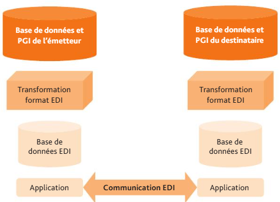
La gestion électronique des documents (GED)
Définition
La gestion électronique des documents consiste à utiliser, transformer et stocker des informations (ex. : contrats, factures) sous forme numérique afin de favoriser le travail collaboratif.
- La GED répond de plus en plus à des obligations légales.
L’exploitation d’une GED
- Une GED peut désigner deux stades au sein d’une organisation : le processus de numérisation ou son résultat.
- Démarche d’une GED :
| Item | Description |
|---|---|
| Recevoir les documents papier ou mail | Collecte |
| Scanner ou numériser grâce à un logiciel de reconnaissance de caractère (LRC) ou lecture automatisée de documents (LAD) | Transformation dématérialisée |
| Sauvegarder et archiver sur des supports numériques réinscriptibles (modifiables) ou non réinscriptibles (non modifiables) | Sécurisation |
| Centraliser et intégrer les données sur un espace de stockage pour les acteurs internes et/ou externes à l’organisation | Centralisation, intégration des données et mutualisation des accès |
| Accéder aux documents numérisés (acteurs habilités) | Partage des documents et données en cohérence avec les droits d’accès des utilisateurs |
| Traiter et exploiter les documents (en cohérence avec les droits d’accès sur le système d’information) | Traitement |
Les avantages et inconvénients d’une GED
- Même si elle nécessite un investissement au lancement, la GED apporte de nombreuses fonctionnalités ;
- Atouts et limites d’une GED :
Atouts
- Réduction du temps de traitement de l’information (raccourcissement de moitié du temps de traitement) ;
- Réduction des coûts (moins de frais de personnels, meilleure productivité, etc.) de l’ordre de 90 % ;
- Accès aux documents pour les acteurs internes (collaborateurs) et externes (clients, fournisseurs) ;
- Possibilité de télécharger les pièces justificatives utiles à tout traitement ;
- Meilleure fluidité de l’information dans l’organisation ;
- Mutualisation des informations par le biais d’accès partagés aux informations ;
- Sécurisation accrue des informations conservées, stockées sur plusieurs supports ;
- Possibilité d’archiver sur des supports non réinscriptibles (à des fins historiques ou juridiques) ;
- Possibilité de stocker les données sur un cloud ;
- Promotion du zéro-papier.
Limites
- Acquisition de matériels puissants (ex. : scanners, ordinateurs) ;
- Acquisition de logiciels spécifiques (OCR…) ;
- Contrôles et validations internes (afin de vérifier que les contenus d’origine sont identiques à ceux obtenus avec un OCR) ;
- Recours à des prestataires extérieurs spécialisés (entreprises de services numériques – ESN) ;
- Changement des méthodes de travail ;
- Risque de pannes ou dysfonctionnements (pertes de données) ;
- Coûts importants à supporter au démarrage.
Le langage à balises d’échange de données en gestion
Les caractéristiques des langages à balises
Définitions
- Le langage à balises est une syntaxe permettant d’exprimer un message en respectant simultanément le contenu et la structure (ex. : XML ou HTML pour le Web) ;
- Une balise est une série de caractères qui déclenche automatiquement une action au travers d’un programme informatique.
- Les langages à balises sont universels même si chacun revêt des spécificités.
Le langage HTML (Hypertext Markup Language)
- Le langage HTML permet de lire des pages Web provenant de différents serveurs utilisant le protocole http (Hypertext Transfer Protocol) ;
- Les balises sont encadrées par
<et>; - Chaque balise d’ouverture
< >est accompagnée d’une balise de fermeture< / >. - Principales balises HTML :
| Balise | Fonction au sein de la page Web |
|---|---|
| <HTML> | Déclaration (ouverture) d’un document HTML |
| <HEAD> | Déclaration de l’en-tête de la page Web |
| <TITLE> | Titre de la page Web à placer dans l’entête |
| <BODY> | Corps de la page |
| <IMG> | Insertion d’une image |
| <BR> | Passage à la ligne suivante (pas de balise de fermeture pour cette action) |
| <B> <I> <BIG> | Caractère gras Écriture en italique Écriture en grands caractères |
| <FONTCOLOR = ff0000> | Couleur de police (ici couleur rouge définie par le code FF0000). |
| <UL> <OL> <LI> | Permet de présenter une liste d’éléments (avec puce) Permet de présenter une liste d’éléments numérotés Permet d’ajouter un élément à une liste |
| <FORM> <A> | Délimite un formulaire à compléter en ligne par un internaute Lien hypertexte. Indiquer l’URL de destination grâce à HREF = “autredocument.HTML” |
Le langage XML (eXtensible Markup Language)
- Le langage XML est un langage à balises étendu permettant le transport de données et la communication sur le Web ;
- Le langage XML permet d’inventer des balises (méta langage), dans le respect de la syntaxe (ouverture et fermeture des balises).
Exemple
<Page d’accueil du site Web>
<titre>
<paragraphe>Respect de l’ordre d’imbrication des balises :
</paragraphe>
</titre>
</Page d’accueil du site Web>
Mise en pratique
Cas pratique 7 : Les Abymes Cycles
Le club Les Abymes cycles en Guadeloupe envoie régulièrement des documents à de ses adhérents et des clubs cyclistes partenaires pour l’organisation de rencontres et de compétitions. Le dirigeant du club dispose d’un système d’information assez performant qu’il exploite quotidiennement lors de ses échanges de données informatisés.
- Quels seraient les inconvénients d’envoyer la prochaine convocation à la compétition sportive organisée avec une extension.docx ?
- À quel moment l’émetteur doit-il choisir le format approprié pour l’envoi de documents ?
Cas pratique 8 : Risoul’Fix
Compétence attendue
Analyser les différents formats d’échange de documents et apprécier leur interopérabilité.
L’entreprise Risoul’Fix, domiciliée dans les Hautes-Alpes, a été créée il y a 8 ans par deux ingénieurs passionnés de sports d’hiver, Lucas Leblanc et Charlie Queyras. Elle fabrique des socles muraux de rangement de skis pour les particuliers et les professionnels. Ces produits sont une innovation sur le marché et l’activité est en pleine croissance en raison de la présence des stations de skis dans la région et de contrats avec les loueurs de matériels et d’hébergements pour skieurs. Risoul’Fix dispose d’un ensemble d’applications installées au cours de ces huit années.
- Le responsable de la production, Hugo Le Breton, doit déclencher les commandes de matériaux et composants vers les fournisseurs sur le PGI FUP car il lui est impossible de faire communiquer le logiciel de production avec le PGI. Identifiez les difficultés techniques à l’origine de ces dysfonctionnements.
- Analysez les solutions à mettre en place pour améliorer la circulation des échanges au sein du système d’information.
- Les dirigeants Lucas Leblanc et Charlie Queyras envisagent d’ajouter au PGI un module de gestion de production et un EDI. Appréciez-en les avantages.
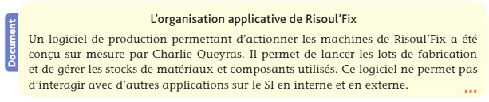
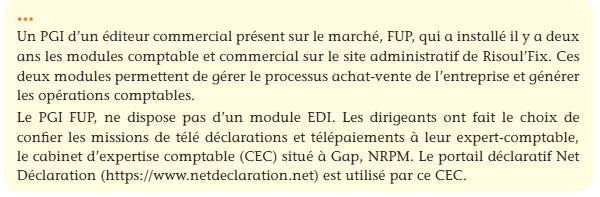
Cas pratique 9 : Aurore Boréale
Compétence attendue
Caractériser et apprécier une procédure d’échange de données informatisé.
La SA Aurore Boréale est une holding implantée à Lyon depuis 27 ans qui commerce à travers le monde au travers de ses trois filiales (document). Elle est au contact de nombreux acteurs économiques : fournisseurs, filiales, clients, etc. La direction financière de la holding gère les opérations de gestion des commandes entre fournisseurs et filiales.
- Repérez les échanges facilités par l’EDI dans le contexte de la SA Aurore Boréale.
- Analysez les apports des échanges de données informatisés.
- Appréciez la caractéristique principale d’un échange EDI.
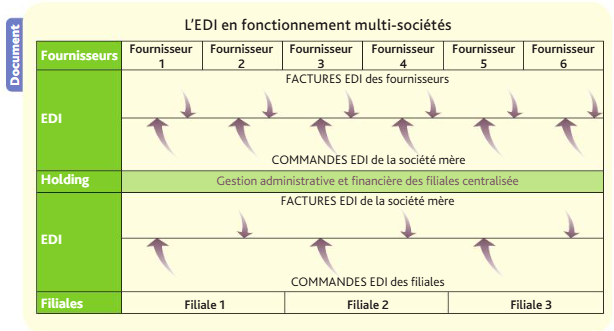
1.4.5 Les documents électroniques légaux
Chez Vasseur — la situation
La mairie de Joué-lès-Tours a renvoyé une facture papier : elle n’est plus recevable. Au même moment, Sofiane Belkacem se demande s’il peut cesser d’imprimer les 62 bulletins de paie chaque mois.
La question de cette section : quels documents la loi impose-t-elle désormais sous forme électronique, et à quelles conditions ?
Les factures électroniques
Définition
Une facture est dite électronique lorsque l’intégralité du document original émane d’un support électronique (fichier informatique).
A savoir
Dissociez bien la facture papier numérisée ou scannée et la facture électronique.
- Les mentions obligatoires sont identiques aux factures papier même si les factures électroniques remplissent des conditions spécifiques ;
- Conditions d’émission de factures uniquement électronique :
| Item | Description |
|---|---|
| Accord | - Si l’acheteur est d’accord, la facture peut être émise par voie électronique - Cet accord doit être formalisé pour être valide et pouvoir servir de preuve |
| Garanties | - L’authenticité de l’émetteur - La lisibilité et l’intégrité du contenu (pas de modification entre l’émission et la réception) |
- L’archivage des factures électroniques peut être effectué dans le format numérique d’origine ;
- Les formats d’émission de factures électronique :
| Item | Description |
|---|---|
| Piste d’Audit Fiable | Mise en place de contrôles car le PDF de la facture doit pouvoir attester de l’authentification et de l’intégrité du document |
| PDF signé | Impose une signature électronique avec un certificat électronique afin de sécuriser la création et l’échange de la facture |
| EDI | Utilisation d’un format EDI répondant aux normes EDIFACT |
- Le format électronique présente des avantages évidents :
| Item | Description |
|---|---|
| Coûts | - Diminution des coûts de traitements |
| Productivité | - Diminution des temps de traitement - Automatisation des paiements - Automatisation des relances et donc des délais de paiement réel |
| Délais | - Diminution des délais de transmission. (ex. : le temps moyen de traitement d’une facture passe de 15 jours en 100 % papier à 3 jours pour l’électronique) |
| Sécurité | - Amélioration des fonctionnalités de sauvegardes et archivages |
| Traçabilité | - Amélioration des tris en fonction des provenances des factures |
A savoir
- Le coût de traitement moyen d’une facture sortante est de 9 € (papier), contre 5 € (électronique).
- Le coût de traitement moyen d’une facture entrante est de 13,8 € (papier) et de 7,5 € (électronique).
Les bulletins de paie électroniques
Définition
Le bulletin de paie électronique n’est autre que la version numérique du bulletin de paie traditionnel papier.
- Le bulletin de paie électronique revêt la même valeur juridique que sa version papier ;
- Depuis le 1er janvier 2017, l’employeur du secteur privé peut remettre aux salariés un bulletin de paie sous format électronique si ceux-ci ne s’y opposent pas, avec des avantages évidents mais aussi des risques :
| Avantages | Inconvénients |
|---|---|
| - Protection contre les pertes et destructions - Accessibilité à distance - Réduction des coûts - Réel suivi sur toute une carrière | - Difficulté de garantir l’intégrité, la sécurité la confidentialité - Difficulté d’assurer un stockage performant - Difficulté d’assurer une disponibilité des lieux de stockage |
La déclaration sociale nominative (DSN)
Définition
La déclaration sociale nominative (DSN) est un fichier unique, mensuel et dématérialisé, produit automatiquement à partir du logiciel de paie et transmis à un point d’entrée unique, qui redistribue les données à tous les organismes concernés.
- Obligatoire pour tous les employeurs depuis 2017, la DSN remplace la trentaine de déclarations sociales qui existaient auparavant (DADS-U, attestations de salaire, déclarations Urssaf, retraite, prévoyance, radiations Pôle emploi, etc.) ;
- Elle est issue de la paie : les données déclarées sont exactement celles qui ont servi à établir les bulletins. C’est le principe même du dispositif — on déclare ce qui a été payé, et non l’inverse ;
- Elle est nominative : les données sont transmises salarié par salarié, et non plus sous forme de totaux ;
- Elle est mensuelle, à échéance du 5 ou du 15 du mois suivant selon l’effectif, complétée par des signalements d’événements au fil de l’eau (arrêt de travail, fin de contrat).
Une image pour comprendre
Avant la DSN, l’employeur remplissait un formulaire différent pour chaque organisme, avec les mêmes informations recopiées à chaque fois — et donc autant d’occasions de se tromper et de se contredire. La DSN, c’est le guichet unique : une seule déclaration déposée à une seule adresse, que la plateforme se charge de découper et d’adresser à chacun.
| Apports | Points de vigilance |
|---|---|
| - Une seule déclaration au lieu d’une trentaine - Suppression des ressaisies et des incohérences entre déclarations - Droits des salariés ouverts plus rapidement (arrêt maladie, chômage) - Contrôles automatiques avant dépôt | - Toute erreur de paramétrage de la paie se propage à tous les organismes - Les corrections passent par des régularisations sur les mois suivants - Le calendrier est strict : le retard est sanctionné par une pénalité - Suppose un logiciel de paie à jour de la norme en vigueur |
Le lien avec le reste du programme
La DSN est un cas d’école d’échange de données informatisé (EDI) : un fichier à format normalisé, produit par une application, transmis sans ressaisie et intégré directement dans le système d’information du destinataire. Vous retrouvez ici, appliqués à la paie, tous les mécanismes du chapitre précédent.
Vérifiez que vous avez compris
Sofiane Belkacem scanne une facture papier reçue d’un fournisseur et l’enregistre en PDF. Vient-il de recevoir une facture électronique ?
Non. Une facture est électronique lorsque l’intégralité du document, de son émission à sa conservation, est électronique. Une facture papier numérisée reste une facture papier, dont on a fait une copie — l’original est celui que le fournisseur a imprimé. C’est la distinction la plus fréquemment testée à l’examen.
Mise en pratique
Cas pratique 10 : Ice North
Compétences attendues
- Analyser les différents formats d’échange de documents et apprécier leur interopérabilité
- Caractériser et apprécier une procédure d’échange de données informatisées
- Justifier le recours à la signature électronique et au certificat numérique
- Caractériser et exploiter les fichiers d’échange de données exigés par la législation en vigueur
La société anonyme Ice North intervient dans le secteur industriel. Le président, Hugo Cyr et le directeur général, Colas Saint insufflent une forte dynamique depuis 5 ans. Le siège social est situé à Saint-Ouen-l’Aumône (Val-d’Oise). Les produits fabriqués sont des fixations (vis, écrous) et des plaques d’assemblage utilisés dans le BTP. Ice North occupe une place de leader national dont la capacité à innover et la performance de l’outil industriel lui offrent une forte réactivité aux demandes de ses clients. Plusieurs sites coexistent en France : Nantes, Strasbourg, Lyon, Marseille et Toulouse. Ice North évolue dans un secteur concurrentiel très agressif et doit être réactive à tout élément susceptible d’impacter sa performance. Ainsi, la maîtrise des technologies, compétences, innovations, coûts d’approvisionnement, de stockage, de production, et de logistique est au cœur de ses priorités, c’est pourquoi le bon fonctionnement de son système d’information constitue un axe privilégié de sa stratégie. Le système d’information d’Ice North est piloté par le centre administratif du site de Saint-Ouen-l’Aumône. Les décisions sont ensuite relayées aux autres sites de l’entreprise. Cependant, chaque site abrite son propre SI tout en assurant une connectivité via un PGI multisites. Il y a 5 ans, le projet Détifoss, ayant pour but de créer une plateforme d’échanges de données au travers des sites français a permis d’améliorer la performance. L’application qui donne accès à la plateforme d’échanges de données s’est avérée efficace et répond aux besoins des utilisateurs. Le SI fait l’objet de multiples réajustements et d’améliorations continues.
Missions
- L’activité d’Ice North dans le domaine de la construction immobilière l’amène à travailler avec les collectivités territoriales. Identifiez les obligations légales en termes de facturation dans ce contexte.
- Lors des échanges de factures avec ses partenaires économiques, Ice North doit respecter des conditions de forme et de fond. Caractérisez-en les principaux éléments.
- Analysez les avantages de la facturation électronique pour Ice North et précisez ce qui confère sa valeur juridique à une facture électronique. Justifiez votre réponse.
- Précisez si l’entreprise est tenue de recourir à la facturation électronique avec ses partenaires privés.
- Indiquez les obligations légales en matière de bulletin de salaire électronique pour Ice North.
- Le responsable de la paie d’Ice North établit chaque mois la déclaration sociale nominative pour les 6 sites. Rappelez ce qu’est la DSN, précisez d’où proviennent les données qu’elle contient, et expliquez pourquoi une erreur de paramétrage du logiciel de paie a des conséquences bien au-delà du bulletin de salaire.
QCM
Synthèse
La transition numérique
Visibilité sur le Web et référencement, e-réputation, exploitation des avis et commentaires, dématérialisation, développement des usages et du télétravail. Elle se conduit en quatre étapes — diagnostiquer, définir les besoins, mettre en œuvre, accompagner — et c’est la dernière qui décide du succès. Dispositif public d’accompagnement des TPE et PME : France Num.
Internalisation ou externalisation
Trois voies : tout en interne, tout confié à une ESN (infogérance), ou un système mixte. Le choix dépend des compétences disponibles, de la volonté de garder la maîtrise du SI, du coût et de la flexibilité recherchée. Il se prépare par un diagnostic du SI : état des lieux, dysfonctionnements, risques, compétences, besoins d’évolution.
Urbanisation et audit du SI
L’urbanisation organise le SI en quatre couches — métier, fonctionnelle, applicative, technique — pour qu’il évolue par morceaux sans tout reconstruire. L’audit en examine la fiabilité, la sécurité et la conformité au regard d’un référentiel (Cobit), et porte une opinion. L’un construit, l’autre constate ; la piste d’audit est le point de rencontre avec la comptabilité.
Les entreprises de services numériques (ESN)
Rôles et secteurs d’intervention, contenu des prestations (conseil, cybersécurité et hébergement, intégration, formation, développement et support). Le contrat de prestations de services se lit avec une grille : périmètre, durée, résiliation, délais et pénalités, facturation (forfait, régie ou formule mixte), confidentialité, sauvegarde, localisation des données, et réversibilité.
Procédures d’échange de données dématérialisées
Les formats (ouverts ou propriétaires) et le choix du format selon l’usage ; l’interopérabilité et les interfaces ; l’EDI, échange d’application à application sans ressaisie, sur la base d’une norme commune (EDIFACT) ; la GED ; les langages à balises, HTML pour le Web et XML pour transporter des données structurées.
Documents électroniques légaux
La facture électronique — électronique de bout en bout, à ne pas confondre avec une facture papier scannée ; obligatoire avec le secteur public, en cours de généralisation entre entreprises ; sa valeur juridique tient à l’authenticité de l’origine, à l’intégrité du contenu et à la lisibilité. Le bulletin de paie électronique, remis par défaut sauf opposition du salarié. La DSN, déclaration unique et mensuelle issue de la paie, qui a remplacé une trentaine de déclarations sociales.
◀ 1.3 La dimension technologique du système d’information · Glossaire de la partie 1 ▶